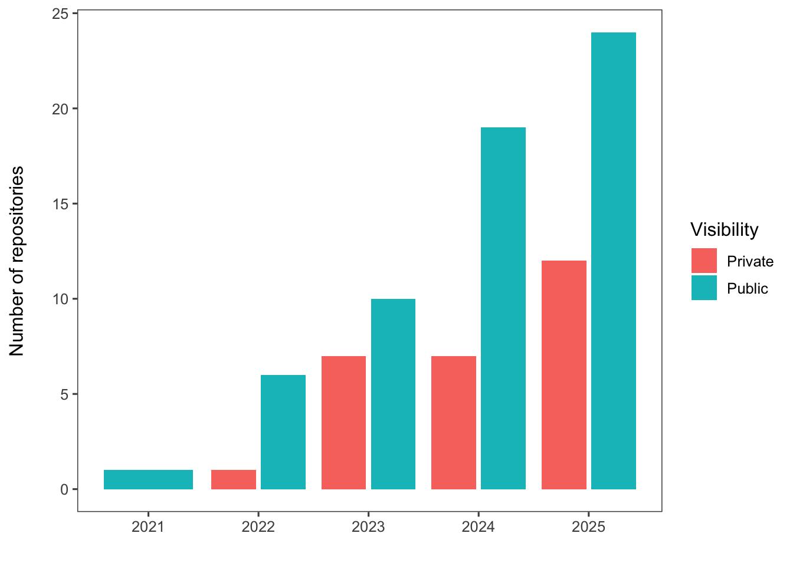
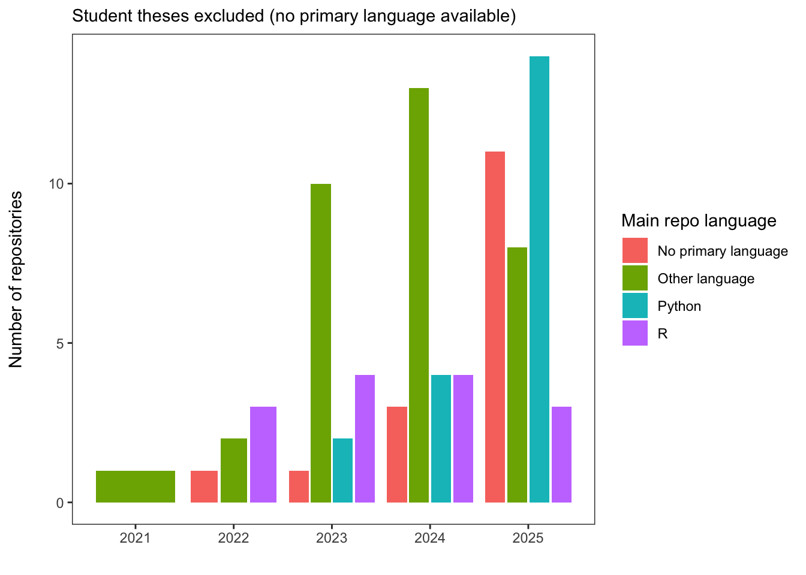
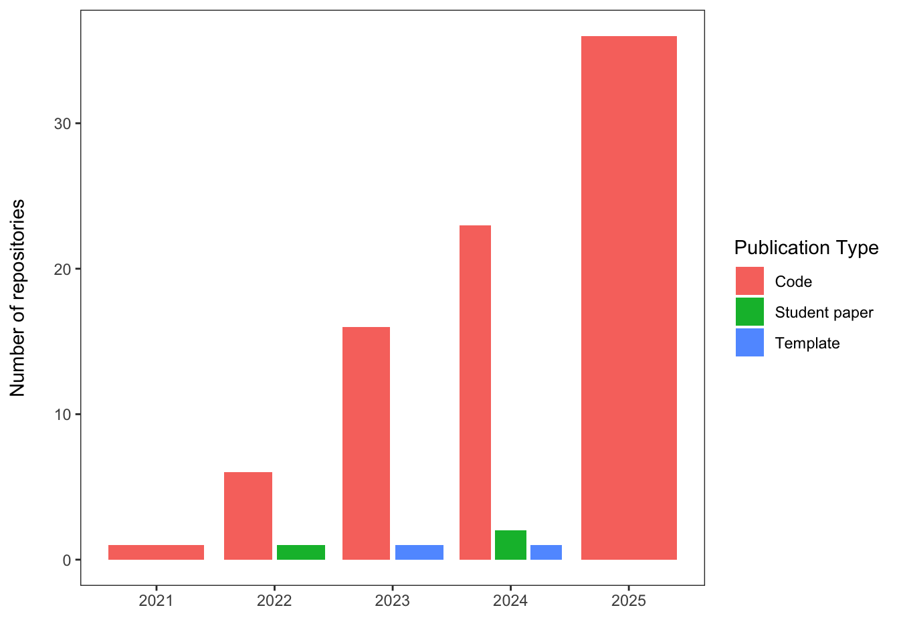
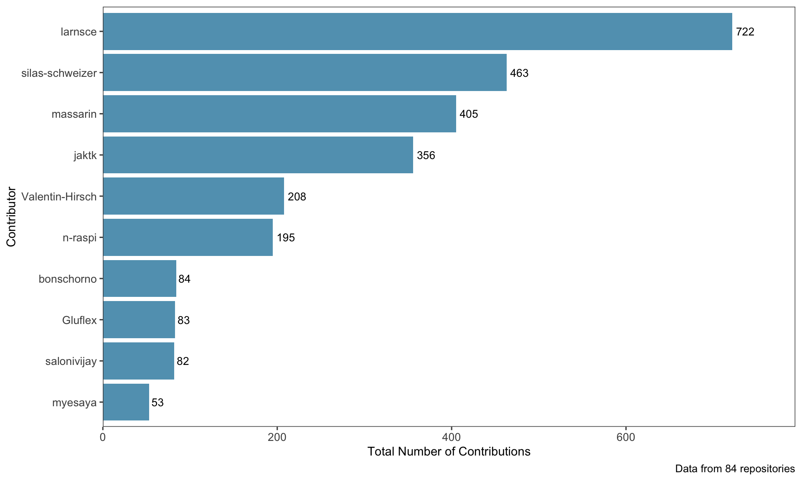
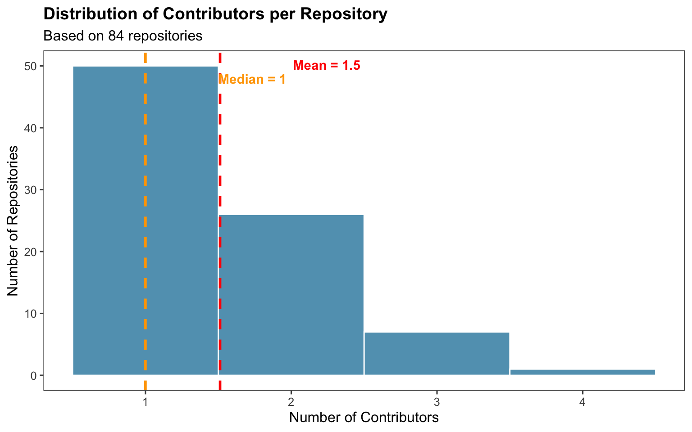
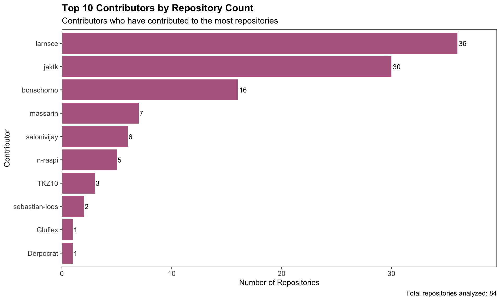
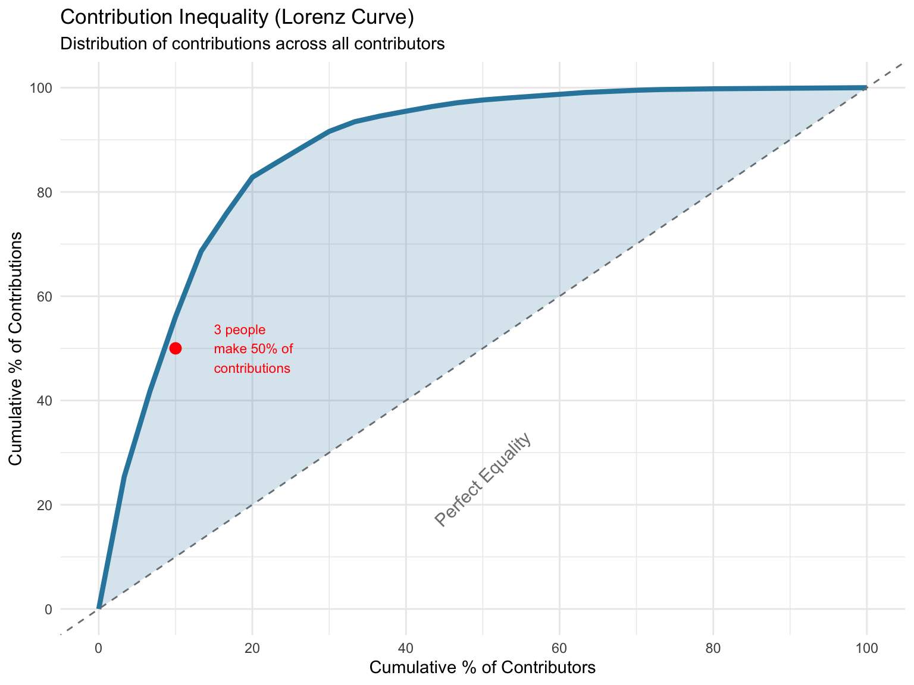

Code
library(tidyverse)
library(scales)
library(knitr)
library(ggthemes)
# Set theme for all plots
theme_set(theme_few())library(tidyverse)
library(scales)
library(knitr)
library(ggthemes)
# Set theme for all plots
theme_set(theme_few())github_repos <- read_csv("clean-data/github_repos.csv")github_repos |>
count(created_year, is_private) |>
ggplot(aes(x = created_year, y = n, fill = is_private)) +
geom_col(position = position_dodge2()) +
labs(
x = "",
y = "Number of repositories\n",
fill = "Visibility"
) +
theme_few() +
theme(panel.grid = element_blank())
github_repos |>
count(created_year, license_dummy) |>
ggplot(aes(x = created_year, y = n, fill = license_dummy)) +
geom_col(position = position_dodge2()) +
labs(
x = "",
y = "Number of repositories\n",
fill = "License?"
) +
theme_few() +
theme(panel.grid = element_blank())
github_repos |>
filter(publication_type != "Student paper") |>
count(created_year, primary_language_ext2) |>
ggplot(aes(x = created_year, y = n, fill = primary_language_ext2)) +
geom_col(position = position_dodge2()) +
labs(
x = "",
y = "Number of repositories\n",
fill = "Main repo language",
subtitle = "Student theses excluded (no primary language available)"
) +
theme_bw() +
theme(panel.grid = element_blank())
github_repos |>
filter(publication_type != "Student paper") |>
count(created_year, primary_language_ext2) |>
group_by(created_year) |>
mutate(rel_freq = n/sum(n)) |>
ggplot(aes(x = created_year, y = rel_freq, fill = primary_language_ext2)) +
geom_col(position = "stack") +
scale_y_continuous(labels = scales::label_percent()) +
labs(y = "",
x = "",
fill = "Main repo language")github_repos |>
count(created_year, publication_type) |>
ggplot(aes(x = created_year, y = n, fill = publication_type)) +
geom_col(position = position_dodge2()) +
labs(x = "", y = "Number of repositories\n", fill = "Publication Type") +
theme_bw() +
theme(panel.grid = element_blank())
contributors <- read_csv("raw-data/contributors.csv")top_contributors <- contributors %>%
group_by(login) %>%
summarise(
total_contributions = sum(contributions),
repos_contributed_to = n_distinct(repository)
) %>%
arrange(desc(total_contributions)) %>%
head(10)
# Display table
kable(top_contributors,
caption = "Top 10 Contributors by Total Contributions",
col.names = c("Contributor", "Total Contributions", "Repositories"))| Contributor | Total Contributions | Repositories |
|---|---|---|
| larnsce | 722 | 36 |
| silas-schweizer | 463 | 1 |
| massarin | 405 | 7 |
| jaktk | 356 | 30 |
| Valentin-Hirsch | 208 | 1 |
| n-raspi | 195 | 5 |
| bonschorno | 84 | 16 |
| Gluflex | 83 | 1 |
| salonivijay | 82 | 6 |
| myesaya | 53 | 1 |
ggplot(top_contributors, aes(x = reorder(login, total_contributions),
y = total_contributions)) +
geom_col(fill = "#2E86AB", alpha = 0.8) +
geom_text(aes(label = total_contributions),
hjust = -0.2,
size = 3.5) +
coord_flip() +
labs(
x = "Contributor",
y = "Total Number of Contributions",
caption = paste("Data from", n_distinct(contributors$repository), "repositories")
) +
theme(
plot.title = element_text(size = 14, face = "bold"),
plot.subtitle = element_text(size = 12),
axis.title = element_text(size = 11),
axis.text = element_text(size = 10)
) +
scale_y_continuous(expand = expansion(mult = c(0, 0.1)),
labels = comma)
repo_stats <- contributors %>%
group_by(repository) %>%
summarise(
num_contributors = n_distinct(login),
total_contributions = sum(contributions)
)
avg_contributors <- mean(repo_stats$num_contributors)
median_contributors <- median(repo_stats$num_contributors)
# Create summary table
summary_stats <- tibble(
Metric = c("Average Contributors per Repository",
"Median Contributors per Repository",
"Total Unique Contributors",
"Total Repositories"),
Value = c(round(avg_contributors, 2),
median_contributors,
n_distinct(contributors$login),
n_distinct(contributors$repository))
)
kable(summary_stats, caption = "Repository Contributor Statistics")| Metric | Value |
|---|---|
| Average Contributors per Repository | 1.51 |
| Median Contributors per Repository | 1.00 |
| Total Unique Contributors | 30.00 |
| Total Repositories | 84.00 |
ggplot(repo_stats, aes(x = num_contributors)) +
geom_histogram(binwidth = 1, fill = "#2E86AB", alpha = 0.8, color = "white") +
geom_vline(xintercept = avg_contributors,
color = "red", linetype = "dashed", size = 1) +
geom_vline(xintercept = median_contributors,
color = "orange", linetype = "dashed", size = 1) +
annotate("text", x = avg_contributors + 0.5, y = Inf,
label = paste("Mean =", round(avg_contributors, 1)),
hjust = 0, vjust = 2, color = "red", fontface = "bold") +
annotate("text", x = median_contributors + 0.5, y = Inf,
label = paste("Median =", median_contributors),
hjust = 0, vjust = 3.5, color = "orange", fontface = "bold") +
labs(
title = "Distribution of Contributors per Repository",
x = "Number of Contributors",
y = "Number of Repositories",
subtitle = paste("Based on", n_distinct(repo_stats$repository), "repositories")
) +
theme(
plot.title = element_text(size = 14, face = "bold"),
plot.subtitle = element_text(size = 12)
)
contributors_by_repos <- contributors %>%
group_by(login) %>%
summarise(
num_repositories = n_distinct(repository),
total_contributions = sum(contributions),
avg_contributions_per_repo = round(mean(contributions), 1)
) %>%
arrange(desc(num_repositories)) %>%
head(10)
kable(contributors_by_repos,
caption = "Top 10 Contributors by Number of Repositories",
col.names = c("Contributor", "Repositories", "Total Contributions", "Avg per Repo"))| Contributor | Repositories | Total Contributions | Avg per Repo |
|---|---|---|---|
| larnsce | 36 | 722 | 20.1 |
| jaktk | 30 | 356 | 11.9 |
| bonschorno | 16 | 84 | 5.2 |
| massarin | 7 | 405 | 57.9 |
| salonivijay | 6 | 82 | 13.7 |
| n-raspi | 5 | 195 | 39.0 |
| TKZ10 | 3 | 10 | 3.3 |
| sebastian-loos | 2 | 31 | 15.5 |
| Derpocrat | 1 | 15 | 15.0 |
| Gluflex | 1 | 83 | 83.0 |
ggplot(contributors_by_repos, aes(x = reorder(login, num_repositories),
y = num_repositories)) +
geom_col(fill = "#A23B72", alpha = 0.8) +
geom_text(aes(label = num_repositories),
hjust = -0.2,
size = 3.5) +
coord_flip() +
labs(
title = "Top 10 Contributors by Repository Count",
subtitle = "Contributors who have contributed to the most repositories",
x = "Contributor",
y = "Number of Repositories",
caption = paste("Total repositories analyzed:", n_distinct(contributors$repository))
) +
theme(
plot.title = element_text(size = 14, face = "bold"),
plot.subtitle = element_text(size = 12),
axis.title = element_text(size = 11),
axis.text = element_text(size = 10)
) +
scale_y_continuous(expand = expansion(mult = c(0, 0.1)))
# Calculate cumulative contribution percentage
contribution_concentration <- contributors %>%
group_by(login) %>%
summarise(total_contributions = sum(contributions)) %>%
arrange(desc(total_contributions)) %>%
mutate(
cumulative_contributions = cumsum(total_contributions),
cumulative_percentage = cumulative_contributions / sum(total_contributions) * 100,
contributor_rank = row_number()
)
# Find how many contributors make up 50% and 80% of contributions
contributors_for_50 <- min(which(contribution_concentration$cumulative_percentage >= 50))
contributors_for_80 <- min(which(contribution_concentration$cumulative_percentage >= 80))
cat(paste("Top", contributors_for_50, "contributors (",
round(contributors_for_50/n_distinct(contributors$login)*100, 1),
"% of people) make 50% of all contributions\n"))Top 3 contributors ( 10 % of people) make 50% of all contributionscat(paste("Top", contributors_for_80, "contributors (",
round(contributors_for_80/n_distinct(contributors$login)*100, 1),
"% of people) make 80% of all contributions\n"))Top 6 contributors ( 20 % of people) make 80% of all contributions# Prepare data for Lorenz curve
lorenz_data <- contribution_concentration %>%
mutate(
contributor_percentage = contributor_rank / max(contributor_rank) * 100
) %>%
add_row(contributor_percentage = 0, cumulative_percentage = 0, .before = 1)
ggplot(lorenz_data, aes(x = contributor_percentage, y = cumulative_percentage)) +
geom_line(size = 1.5, color = "#2E86AB") +
geom_abline(intercept = 0, slope = 1, linetype = "dashed", color = "gray50") +
geom_ribbon(aes(ymin = contributor_percentage, ymax = cumulative_percentage),
fill = "#2E86AB", alpha = 0.2) +
annotate("text", x = 50, y = 25, label = "Perfect Equality",
angle = 45, color = "gray50", size = 4) +
annotate("point", x = contributors_for_50/n_distinct(contributors$login)*100,
y = 50, color = "red", size = 3) +
annotate("text", x = contributors_for_50/n_distinct(contributors$login)*100 + 5,
y = 50, label = paste(contributors_for_50, "people\nmake 50% of\ncontributions"),
size = 3, hjust = 0, color = "red") +
labs(
title = "Contribution Inequality (Lorenz Curve)",
subtitle = "Distribution of contributions across all contributors",
x = "Cumulative % of Contributors",
y = "Cumulative % of Contributions"
) +
theme_minimal() +
scale_x_continuous(breaks = seq(0, 100, 20)) +
scale_y_continuous(breaks = seq(0, 100, 20))
This analysis examined 84 repositories with a total of 30 unique contributors.
#- **Repository age correlation**: The correlation between repository age and number of contributors is `r round(cor_age_contributors, 2)`, suggesting `r ifelse(cor_age_contributors > 0.3, "older repositories tend to attract more contributors", "age doesn't strongly predict contributor count")`
# - **Repository collaboration**: `r round(multi_repos/nrow(repo_stats)*100, 1)`% of repositories have multiple contributors
#- **Power contributors**: `r sum(contributor_categories$category == "Power Contributors (100+ commits)")` individuals have made 100+ contributions each